In this exercise, I try and predict network attacks using machine learning algorithm. Since I am also learning about PCA, I’ve included some work on principal component analysis as well.
I was on a lookout for an interesting dataset to practice my skills in developing predictive models, PCA analysis, and clustering. This one seems to fit the bill. Here is the backstory and citation.
The RT-IoT2022, a proprietary dataset derived from a real-time IoT infrastructure, is introduced as a comprehensive resource integrating a diverse range of IoT devices and sophisticated network attack methodologies. This dataset encompasses both normal and adversarial network behaviors, providing a general representation of real-world scenarios.
Incorporating data from IoT devices such as ThingSpeak-LED, Wipro-Bulb, and MQTT-Temp, as well as simulated attack scenarios involving Brute-Force SSH attacks, DDoS attacks using Hping and Slowloris, and Nmap patterns, RT-IoT2022 offers a detailed perspective on the complex nature of network traffic. The bidirectional attributes of network traffic are meticulously captured using the Zeek network monitoring tool and the Flowmeter plugin. Researchers can leverage the RT-IoT2022 dataset to advance the capabilities of Intrusion Detection Systems (IDS), fostering the development of robust and adaptive security solutions for real-time IoT networks.
This dataset is available for download at UC Irvine Machine Learning Repository. This is the citation to give credit to the folks who made the dataset available.
S.,B. and Nagapadma,Rohini. (2024). RT-IoT2022 . UCI Machine Learning Repository. https://doi.org/10.24432/C5P338.
Let’s begin by importing the necessary packages and data.
rm(list=ls())
pacman::p_load("tidyverse", "tidyclust", "factoextra",#for tidy data science practice
"tidymodels", "workflows", "finetune", "themis", "embed", "butcher",# for tidy machine learning
"pacman", #package manager
"devtools", #developer tools
"Hmisc", "skimr", "broom", "modelr",#for EDA
"jtools", "huxtable", "interactions", # for EDA
"ggthemes", "ggstatsplot", "GGally",
"scales", "gridExtra", "patchwork", "ggalt", "vip",
"ggstance", "ggfortify", # for ggplot
"DT", "plotly", #interactive Data Viz
# Lets install some ML related packages that will help tidymodels::
"usemodels", "poissonreg", "agua", "sparklyr", "dials", "bonsai",#load computational engines
"doParallel", # for parallel processing (speedy computation)
"ranger", "xgboost", "glmnet", "kknn", "earth", "klaR", "discrim", "naivebayes", "baguette", "kernlab", "lightgbm",#random forest
"janitor", "lubridate")
load("network.RData")This dataset is “wide” with 85 columns and 123117 observations. Let’s get the data in order. “proto”, “service”, and “Attack_type” should be factor variables.
data <-
df %>%
dplyr::select(- ...1) %>%
mutate(id = row_number()) %>%
mutate_if(is.character, as.factor) %>%
janitor::clean_names()
unique(data$attack_type)
table(data$attack_type)I noticed that there were only 12 unique “Attack_type” labels when there was supposed to be 13, according to the documentation. “Amazon-Alexa” appears to be missing. No matter.
We could approach this predictive problem in 2 ways. The first is to create a new variable network_attack where a “yes” indicates a malicious attack pattern, while a “no” indicates normal pattern, defined as “MQTT”, “Thing_Speak”, or “Wipro_bulb”. Hence, the algorithm will be predicting a binary outcome.
The other way would be to design it as a “multiclassification problem”, where the algorithm will attempt to predict attack_type, which includes malicious and normal network flows. Since this is something I have not attempted before, I will proceed down this path. Wish me luck!
data <-
data %>%
mutate(network_attack = as.factor(ifelse(attack_type == "MQTT_Publish" | attack_type == "Wipro_bulb" | attack_type == "Thing_Speak", "no", "yes")),
network_attack = fct_relevel(network_attack, "yes")
) %>%
relocate(id, network_attack, proto, service, attack_type)
#write_csv(data, "network_data.csv")Our next task is to split the dataset into training, cross-validation, and testing sets.
# split the data
set.seed(2024032102)
data_split <-
data %>%
initial_split(strata = attack_type)
data_train <-
data_split %>%
training()
data_test <-
data_split %>%
testing()
data_fold <-
data_train %>%
vfold_cv(v = 10, strata = attack_type)What shall we do now? Should we explore clustering? PCA, or jump right into building a predictive model? Since I’ve had several practices on model building, let’s start off by doing PCA.
To prevent any data leakage, we shall only work on the training set data_train.
There are 2 ways to run PCA, either using prcomp from Base R, or the tidymodels way using step_pca within a recipe. Since I need the practice, let’s work on this PCA analysis using prcomp.
The above code ran into an error. Apparently, I have a column(s) with zero variance data. As I didn’t know how to remove that, other thank using step_nzv or step_zv, I decided to “prep and juice” a recipe so as to obtain the necessary data for running PCA using prcomp.
rec_PCA <-
recipe(formula = ~.,
data = data_train) %>%
update_role(id, network_attack, proto, service, attack_type,
new_role = "id") %>%
step_nzv(all_predictors())
data_train_juice <- rec_PCA %>% prep(verbose = T) %>% juice()We notice that about 30 features with “near zero variance” was removed. Let’s feed that data back into prcomp.
Let’s use plot() to take a look at the scree plot.
plot (data_PCA, main = "")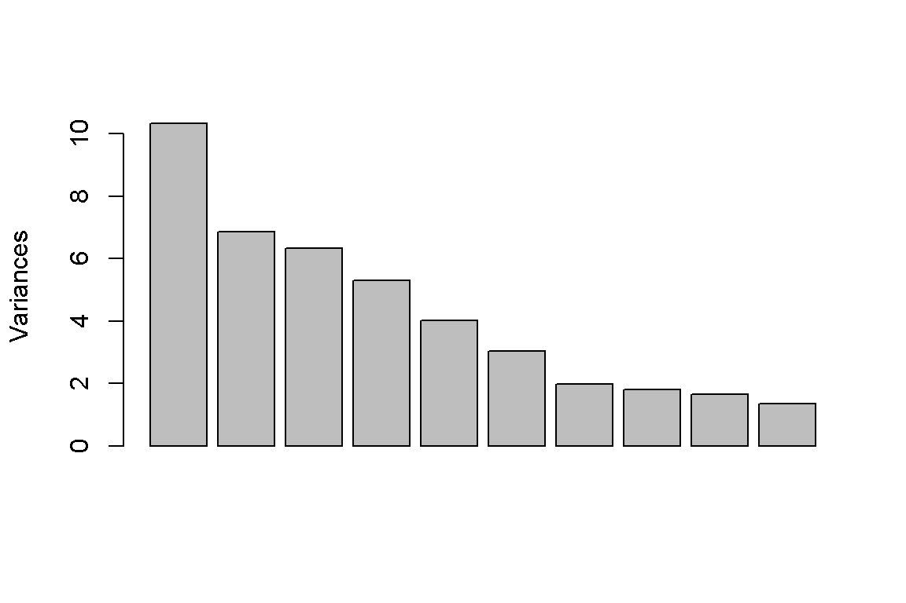
That doesn’t look very informative. How’s about we make our own scree plot using ggplot?
scale<-50
data_PCA %>%
tidy(matrix = "eigenvalues") %>%
mutate(eigenvalues = std.dev^2) %>%
slice_max(order_by = percent, n = 10) %>%
ggplot(aes(x = PC)
) +
geom_point(aes(y = eigenvalues,
size = eigenvalues),
color = "dodgerblue"
) +
geom_col(aes(y = percent*scale)
) +
scale_y_continuous(sec.axis = sec_axis(~./scale, name="Percent")) +
geom_line(aes(y = eigenvalues),
color = "tomato3"
) +
theme(legend.position = "none")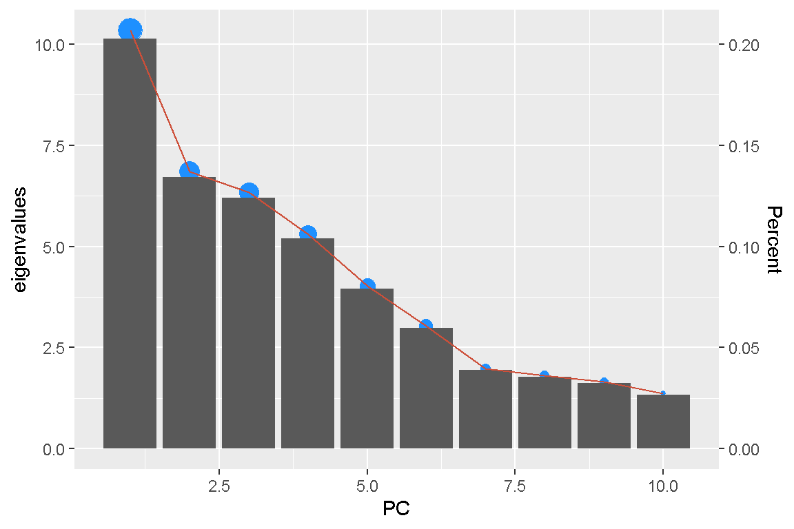
We can also print a summary table of the eigenvalues.
data_PCA %>%
tidy(matrix = "eigenvalues") %>%
mutate(eigenvalues = std.dev^2) %>%
slice_max(order_by = percent, n = 15) %>%
datatable() %>%
formatRound(columns = c("std.dev", "percent", "cumulative", "eigenvalues"),
digits = 3)We can see that if we reduce the data to 9 principal components, it would be representative of about 80 percent of the data. It would require about 14 principal components to represent 90 percent of the data. Let’s keep this in mind when we build our models later.
Let’s examine what each feature contributed to the top 5 principal components.
data_PCA %>%
tidy(matrix = "loadings") %>%
filter(PC < 6) %>%
ggplot(aes(x = value,
y = column,
fill = column)) +
geom_col(show.legend = F)+
facet_wrap(.~PC,
nrow = 1) +
scale_x_continuous(labels = scales::percent) +
theme_bw()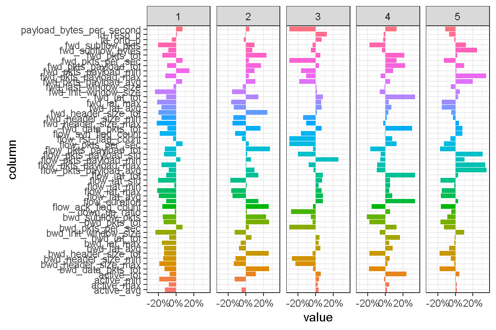
Finally, let’s make a plot of PC1 vs PC2.
data_PCA %>%
tidy(matrix = "loadings") %>%
filter(PC < 3) %>%
pivot_wider(id_cols = column,
names_from = PC,
names_prefix = "PC_0",
values_from = value) %>%
ggplot(aes(x = PC_01,
y = PC_02,
label = column)
) +
geom_point(aes(color = column),
show.legend = F) +
geom_text(check_overlap = T, size = 2)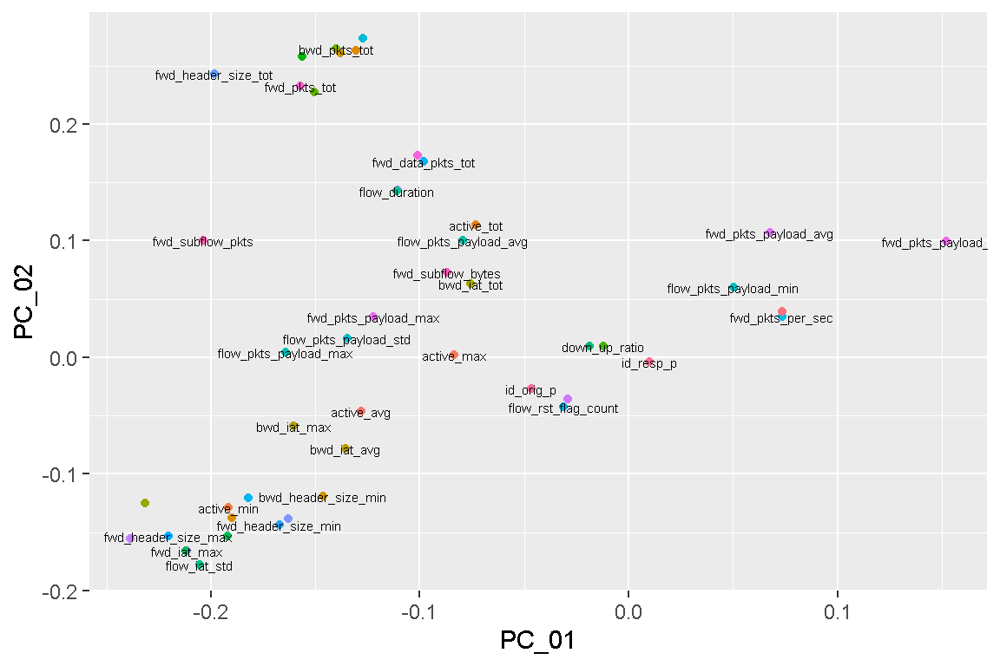
To be honest, I don’t think this is a very good visual. What should I be seeing here? I think that about completes the PCA portion. Next, I shall embark on building a predictive model for determining whether a malicious network attack has been attempted.
tidymodels provides an excellent framework for us to build and test multiple models across a number of recipes. I start by specifying several recipes to try out.
# create recipes
rec_base <-
recipes::recipe(formula = attack_type ~.,
data = data_train) %>%
update_role(attack_type, new_role = "outcome") %>%
update_role(proto, service, new_role = "predictor") %>%
update_role(id, id_orig_p, id_resp_p, network_attack, new_role = "id") %>%
step_nzv(all_predictors()) %>%
step_YeoJohnson(all_numeric_predictors()) %>%
step_dummy(all_nominal_predictors())
rec_PCA <-
recipes::recipe(formula = attack_type ~.,
data = data_train) %>%
update_role(attack_type, new_role = "outcome") %>%
update_role(proto, service, new_role = "predictor") %>%
update_role(id, id_orig_p, id_resp_p, network_attack, new_role = "id") %>%
step_nzv(all_predictors()) %>%
step_normalize(all_numeric_predictors()) %>%
step_dummy(all_nominal_predictors()) %>%
step_pca(all_predictors(), num_comp = tune())Next, I will build some models.
# random forest
spec_rf <-
rand_forest() %>%
set_engine("ranger",
importance = "impurity") %>%
set_mode("classification") %>%
set_args(trees = tune(),
mtry = tune(),
min_n = tune())
# xgboost
spec_xgb <-
boost_tree() %>%
set_engine("xgboost") %>%
set_mode("classification") %>%
set_args(trees = tune(),
tree_depth = tune(),
min_n = tune(),
loss_reduction = tune(),
sample_size = tune(),
mtry = tune(),
learn_rate = tune(),
stop_iter = 10)
## nnet
spec_nnet <-
mlp(hidden_units = tune(), penalty = tune(), epochs = tune()) %>%
set_engine("nnet", MaxNWts = 2600) %>%
set_mode("classification")
# spec_svm <-
# svm_rbf(cost = tune(), rbf_sigma = tune(), margin = tune()) %>%
# set_engine("kernlab") %>%
# set_mode("classification")
spec_lgb <-
boost_tree(trees = tune(), min_n = tune(), tree_depth = tune(),
learn_rate = tune(), stop_iter = 10) %>%
set_engine("lightgbm") %>%
set_mode("classification")
#null
spec_null <-
null_model() %>%
set_mode("classification") %>%
set_engine("parsnip")workflowsetWith workflowset, its super convenient to evaluate multiple recipes and models in one step.
Before we start tuning, let’s initiate parameter ranges.
# set parameters
param_base_lgb <-
base_set %>%
extract_workflow(id = "base_recipe_lgb") %>%
extract_parameter_set_dials() %>%
finalize(data_train)
param_base_nn <-
base_set %>%
extract_workflow(id = "base_recipe_nn") %>%
extract_parameter_set_dials() %>%
finalize(data_train)
param_base_rf <-
base_set %>%
extract_workflow(id = "base_recipe_rf") %>%
extract_parameter_set_dials() %>%
finalize(data_train)
param_base_xgb <-
base_set %>%
extract_workflow(id = "base_recipe_xgb") %>%
extract_parameter_set_dials() %>%
finalize(data_train)
param_PCA_lgb <-
base_set %>%
extract_workflow(id = "PCA_recipe_lgb") %>%
extract_parameter_set_dials() %>%
finalize(data_train) %>%
update(num_comp = num_comp(c(1L, 10L)))
param_PCA_nn <-
base_set %>%
extract_workflow(id = "PCA_recipe_nn") %>%
extract_parameter_set_dials() %>%
finalize(data_train)%>%
update(num_comp = num_comp(c(1L, 10L)))
param_PCA_rf <-
base_set %>%
extract_workflow(id = "PCA_recipe_rf") %>%
extract_parameter_set_dials() %>%
finalize(data_train)%>%
update(num_comp = num_comp(c(1L, 10L)))
param_PCA_xgb <-
base_set %>%
extract_workflow(id = "PCA_recipe_xgb") %>%
extract_parameter_set_dials() %>%
finalize(data_train)%>%
update(num_comp = num_comp(c(1L, 10L)))
base_set <-
base_set %>%
option_add(param_info = param_base_lgb, id = "base_recipe_lgb") %>%
option_add(param_info = param_base_nn, id = "base_recipe_nn") %>%
option_add(param_info = param_base_rf, id = "base_recipe_rf") %>%
option_add(param_info = param_base_xgb, id = "base_recipe_xgb") %>%
option_add(param_info = param_PCA_lgb, id = "PCA_recipe_lgb") %>%
option_add(param_info = param_PCA_nn, id = "PCA_recipe_nn") %>%
option_add(param_info = param_PCA_rf, id = "PCA_recipe_rf") %>%
option_add(param_info = param_PCA_xgb, id = "PCA_recipe_xgb")tune_gridset.seed(2024032103)
cl <- (detectCores()/2) - 1
cores <- cl*2
doParallel::registerDoParallel(cl, cores)
first_tune <-
workflow_map(base_set,
fn = "tune_grid",
verbose = TRUE,
seed = 2024030303,
grid = 11,
resamples = data_fold,
metrics = metric_set(roc_auc, accuracy, f_meas),
control = control_grid(verbose = TRUE,
allow_par = TRUE,
parallel_over = "everything"))
save(first_tune, file = "first_tune.Rda")Once tuning is done, we can use autoplot to view the results.
autoplot(first_tune, select_best = F
) + theme_bw() + theme(legend.position = "bottom")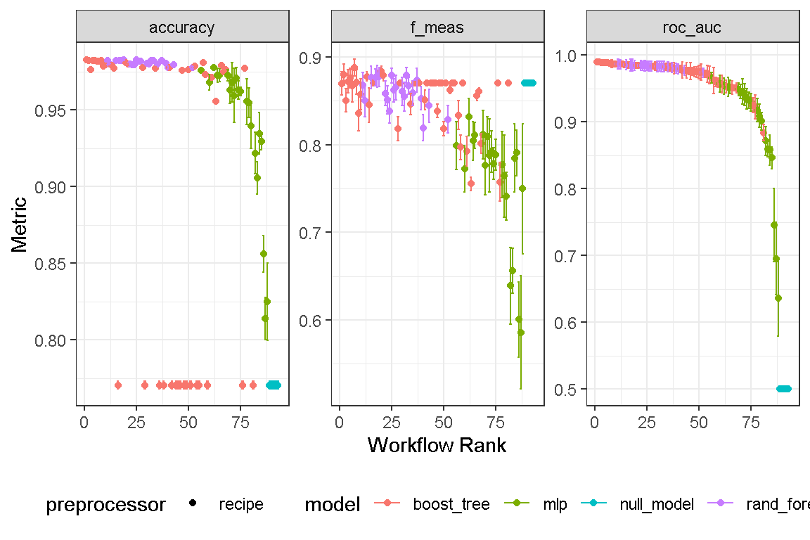
Since this is a multi-classification problem, we are interested in accuracy as a metric. Let’s rank the workflows by accuracy, and use geom_text to label their wflow_id.
autoplot(
first_tune,
rank_metric = "accuracy", # <- how to order models
metric = "accuracy", # <- which metric to visualize
select_best = T # <- one point per workflow
) +
geom_text(aes(y = mean - 0.001, label = wflow_id), angle = 90, hjust = 1, check_overlap = T, size = 4) +
lims(x = c(1, 8),
y = c(0.97, 0.985)) +
theme(legend.position = "none")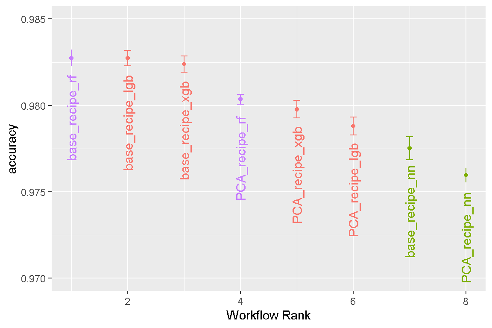
We can also view the results in a table.
first_tune %>%
workflowsets::rank_results(rank_metric = "accuracy", select_best = T) %>%
filter(.metric == "accuracy") %>%
dplyr::select(wflow_id, mean, std_err, rank) %>%
datatable() %>%
formatRound(columns = c("mean", "std_err"),
digits = 5)The results are very close, with base recipe random forest and lightgbm models performing almost on par. PCA recipe based models came in fourth. Let’s visualize what tuning parameters were used for the base_recipe_rf model.
autoplot(first_tune, id = "base_recipe_rf", metric = "accuracy")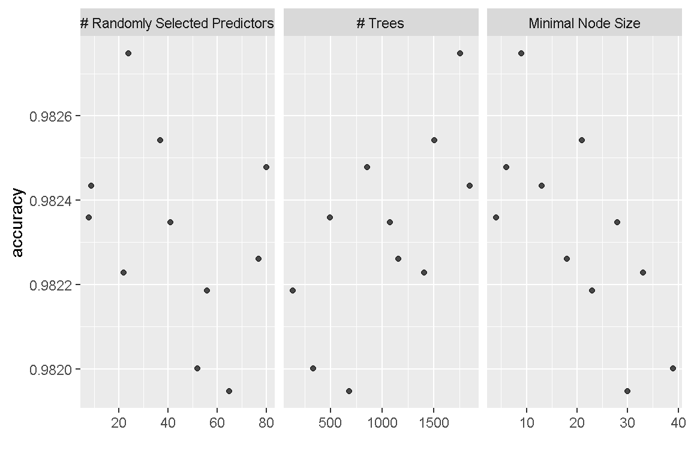
We can also extract this set of hyper-parameters for use later. First, you extract_workflow_set_result and specify the id using wflow_if. Then, use select_best with metric = “accuracy” to extract tuned parameters.
tparam_base_rf <-
first_tune %>%
# extract the workflow_set results by specifying its id
extract_workflow_set_result(id = "base_recipe_rf") %>%
select_best(metric = "accuracy")
tparam_base_rf ┌───────────────────────────────────────┐
│ mtry trees min_n .config │
├───────────────────────────────────────┤
│ 24 1753 9 Preprocessor1_ │
│ Model05 │
└───────────────────────────────────────┘Column names: mtry, trees, min_n, .config
I wonder how many principal components were chosen as a result of tuning. Let’s find out. First, we visualize the results
autoplot(first_tune, id = "PCA_recipe_rf", metric = "accuracy")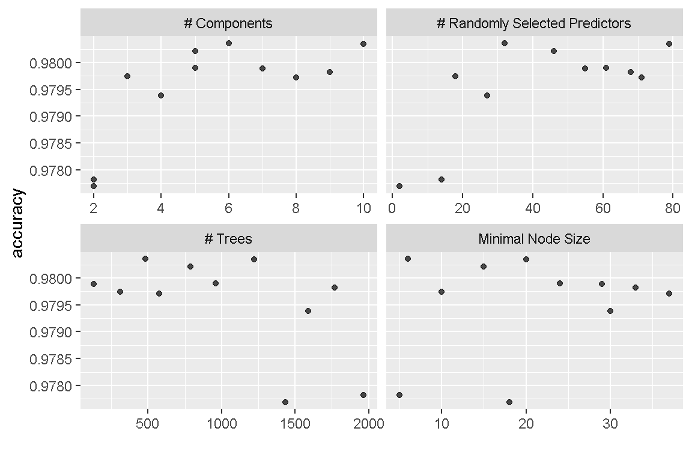
We can always extract the parameters as well.
tparam_PCA_rf <-
first_tune %>%
# extract the workflow_set results by specifying its id
extract_workflow_set_result(id = "PCA_recipe_rf") %>%
select_best(metric = "accuracy")
tparam_PCA_rf ┌──────────────────────────────────────────────┐
│ mtry trees min_n num_comp .config │
├──────────────────────────────────────────────┤
│ 32 481 6 6 Preprocess │
│ or5_Model1 │
└──────────────────────────────────────────────┘Column names: mtry, trees, min_n, num_comp, .config
6 principal components were chosen as being able to achieve the best results.
Let’s extract the tuned hyper-parameters for the base recipe lightbgm model as well, and compare these 3 model using the test dataset.
tparam_base_lgb <-
first_tune %>%
# extract the workflow_set results by specifying its id
extract_workflow_set_result(id = "base_recipe_lgb") %>%
select_best(metric = "accuracy")last_fitNow that we have the tuned hyper-parameters, let’s finalize each workflow and last_fit to data_split.
model_base_rf <-
base_set %>%
extract_workflow(id = "base_recipe_rf") %>%
finalize_workflow(tparam_base_rf) %>%
last_fit(data_split)
model_base_lgb <-
base_set %>%
extract_workflow(id = "base_recipe_lgb") %>%
finalize_workflow(tparam_base_lgb) %>%
last_fit(data_split)For PCA_recipe_rf, as there were hyper parameters being tuned in both the recipe (num_comp) and the random forest model, we need to finalize the recipe and the model in a 2 step process.
I had no experience doing this, and there wasn’t much written about how to go about doing this. Fortunately, I stumbled upon Andrew Couch’s youtube video which explained this clearly. Shout out to Andrew, thank you.
tune_rec_PCA <-
rec_PCA %>%
finalize_recipe(tparam_PCA_rf)
tune_model_rf <-
spec_rf %>%
finalize_model(tparam_PCA_rf)
model_PCA_rf <-
workflow() %>%
add_model(tune_model_rf) %>%
add_recipe(tune_rec_PCA) %>%
last_fit(data_split)Let’s collect the metrics of the 3 models, fitted to the test data.
metrics_base_rf <-
model_base_rf %>%
collect_metrics() %>%
mutate(algo = "Base RF")
metrics_base_lgb <-
model_base_lgb %>%
collect_metrics() %>%
mutate(algo = "Base lgb")
metrics_PCA_rf <-
model_PCA_rf %>%
collect_metrics() %>%
mutate(algo = "PCA RF")
metrics_all <-
bind_rows(metrics_base_rf, metrics_base_lgb, metrics_PCA_rf) %>%
dplyr::select(-.estimator, -.config) %>%
filter(.metric == "accuracy" | .metric == "roc_auc") %>%
pivot_wider(names_from = ".metric",
values_from = ".estimate") %>%
arrange(desc(accuracy))On the test dataset, our base_lgb model slightly edged out the base RF model. Let’s collect their predictions.
pred_base_rf <-
model_base_rf %>%
collect_predictions() %>%
mutate(algo = "Base RF")
pred_base_lgb <-
model_base_lgb %>%
collect_predictions() %>%
mutate(algo = "Base lgb")
pred_PCA_rf <-
model_PCA_rf %>%
collect_predictions() %>%
mutate(algo = "PCA RF")
pred_all <-
bind_rows(pred_base_rf, pred_base_lgb, pred_PCA_rf)
# %>%
# #dplyr::select(-.estimator, -.config) %>%
# filter(.metric == "accuracy" | .metric == "roc_auc") %>%
# pivot_wider(names_from = ".metric",
# values_from = ".estimate") %>%
# arrange(desc(accuracy))We can draw a confusion matrix using the predictions we’ve gathered, using conf_mat and autoplot. Alternatively, we can easily make a plot using ggplot.
pred_all %>%
filter(algo == "Base RF") %>%
conf_mat(estimate = .pred_class, # y-hat
truth = attack_type) %>%
autoplot(type = "heatmap") +
coord_equal()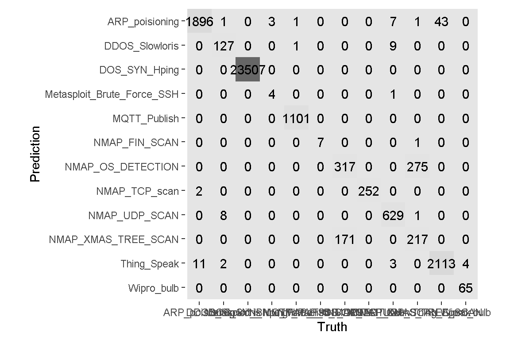
pred_all %>%
filter(algo == "Base RF") %>%
count(.pred_class, attack_type) %>%
complete(.pred_class, attack_type,
fill = list(n = 0)
) %>%
ggplot(aes(x = attack_type,
y = .pred_class,
fill = n)
) +
geom_tile(color = "black",
lwd = 1.5,
linetype = 1) +
geom_text(aes(label = n),
color = "white",
size = 2
)+
coord_equal() +
guides(fill = guide_colourbar(barwidth = 1,
barheight = 10)) +
theme(axis.text.x = element_text(size=rel(0.6), angle = 90),
axis.text.y = element_text(size=rel(0.6)))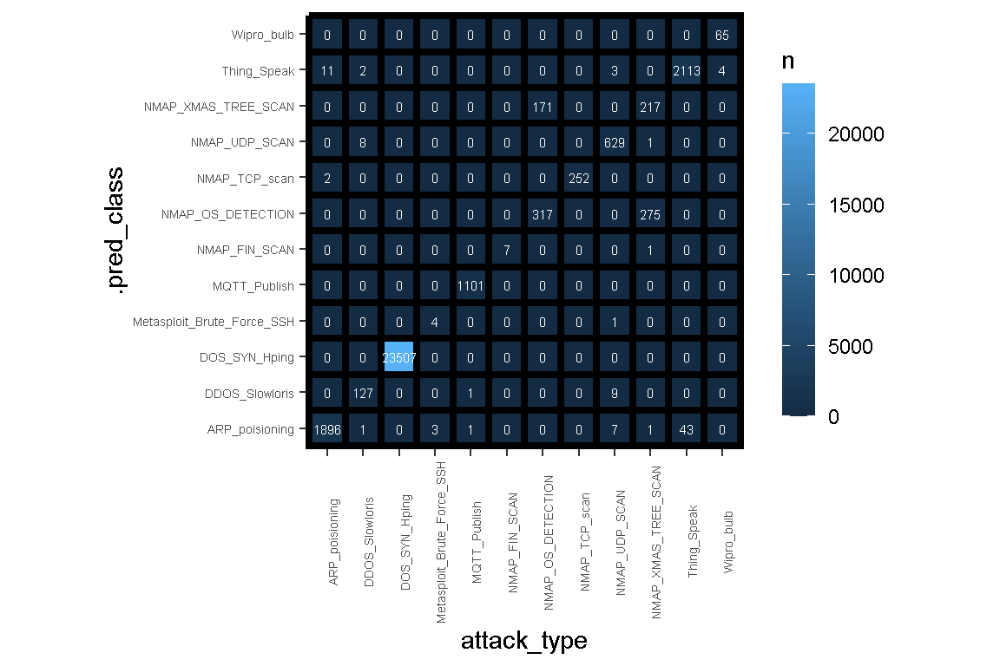
It is also possible to plot roc_auc curves for each class.
pred_all %>%
filter(algo == "Base RF") %>%
roc_curve(truth = attack_type,
.pred_ARP_poisioning:.pred_Wipro_bulb) %>%
ggplot(aes(1 - specificity, sensitivity, color = .level)) +
geom_abline(slope = 1, color = "gray50", lty = 2, alpha = 0.8) +
geom_path(linewidth = 1, alpha = 0.5) +
labs(color = NULL) +
coord_fixed()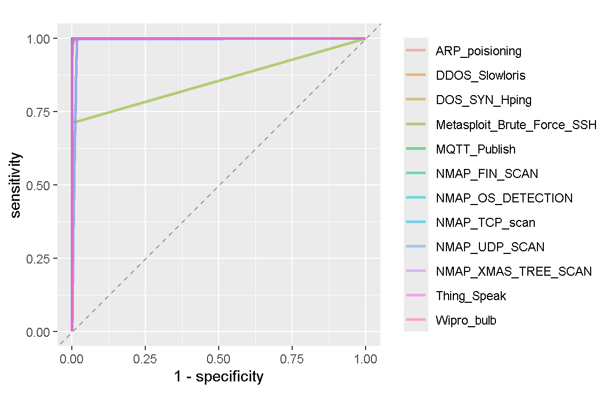
VIPWhich features were important in helping our algorithm determine if the network was likely under attack? Let’s examine this.
vipplot_base_lgb <-
model_base_lgb %>%
extract_fit_parsnip() %>%
vip(geom = "col",
num_features = 10L) +
labs(x = "Importance",
y = "Features of Importance",
title = "Features of Importance - Base Recipe LGB") +
theme_bw()
vipplot_base_lgb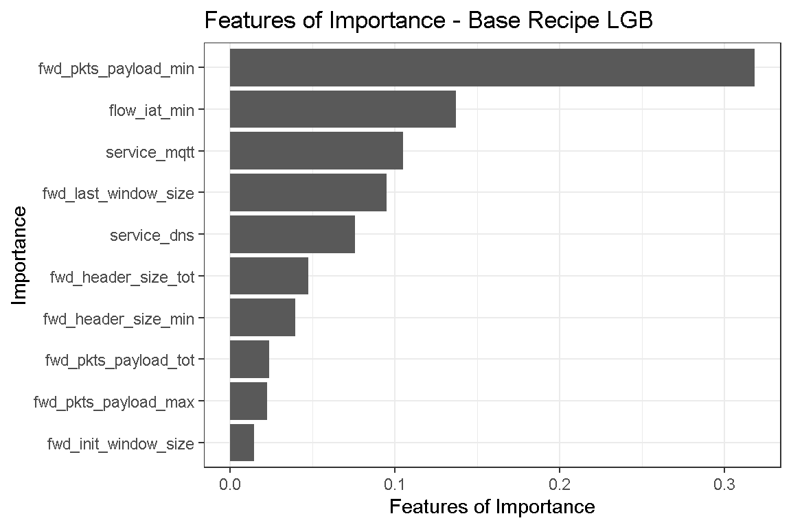
vipplot_base_rf <-
model_base_rf %>%
extract_fit_parsnip() %>%
vip(geom = "col",
num_features = 10L) +
labs(x = "Importance",
y = "Features of Importance",
title = "Features of Importance - Base Recipe RF") +
theme_bw()
vipplot_base_rf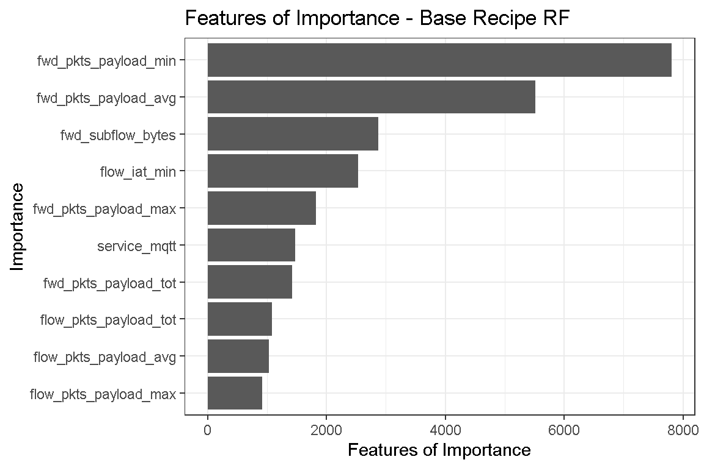
The model based on base recipe Light GBM identified fwd_pkts_payload_min, flow_iat_min, service, fwd_last_window_size and service_dns as the top 5 important features used in determining attack type. Base RF was heavily dependent on features that were “payload” dependent, as well as fwd_subflow_bytes.
We can use these in the next section on clustering.
I think that about completes the work for modeling and predictions. I might circle back at a later date, or in another post where I try and improve prediction metrics using an ensemble of models. As I have no background domain knowledge of network security, I’m unsure if an accuracy of 0.983 with an roc_auc of 0.987 is considered good or not.
For now, let’s move on to clustering.
tidyclustIn module 4, which is schedule in 2 weeks, Prof Roh will be teaching the class about clustering. I’m going to “learn ahead” and see if I can use tidyclust to perform clustering using k-means algorithm on the data_train.
I’ll be following the documentation found online to aid my learning.
Let’s start by preparing a recipe
rec_km <-
recipe(formula = ~.,
data = data_train) %>%
step_rm(all_nominal()) %>%
update_role(id, new_role = "id") %>%
step_nzv(all_predictors()) %>%
step_normalize(all_predictors())
rec_km %>% prep() %>% juice()Next, we specify a k-means model, and for learning purposes, I shall set the num_clusters = tune().
spec_kmeans <-
k_means(num_clusters = tune()) %>%
set_engine("stats")Then, we put both into a workflow.
wf_km <-
workflow() %>%
add_recipe(rec_km) %>%
add_model(spec_kmeans)Let’s use tune_cluster to determine the optimal number of clusters.
set.seed(2024032104)
# set up a grid for clusters
grid_num_clusters <- tibble(num_clusters = 1L:20L)
cl <- (detectCores()/2) - 1
cores <- cl*2
doParallel::registerDoParallel(cl, cores)
tune_km <- tune_cluster(
wf_km,
resamples = data_fold,
grid = grid_num_clusters,
control = control_grid(save_pred = TRUE, extract = identity),
metrics = cluster_metric_set(sse_within_total, sse_total, sse_ratio)
)tune_km %>%
collect_metrics() %>%
filter(.metric == "sse_ratio") %>%
ggplot(aes(x = num_clusters, y = mean)) +
geom_point() +
geom_line() +
theme_bw() +
ylab("mean WSS/TSS ratio, over 10 folds") +
xlab("Number of clusters") +
scale_x_continuous(breaks = 1:20)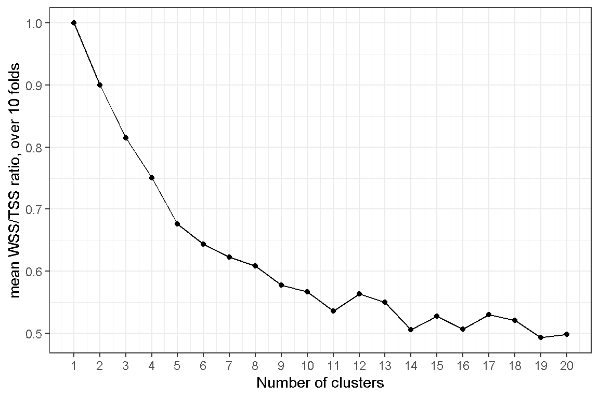
tune_km %>% select_best(metric = "sse_ratio") ┌──────────────────────────────────────┐
│ num_clusters .config │
├──────────────────────────────────────┤
│ 19 Preprocessor1_Model19 │
└──────────────────────────────────────┘Column names: num_clusters, .config
Alternatively, we can do it the Base R way. Well, with a little help from “helper functions” from the factoextra package. There are 3 popular ways to determine optimal clusters. They are the Elbow method, Silhouette method, and Gap static. Let’s explore all 3. We start by preparing the data.
data_kmeans <-
data_train_juice %>%
dplyr::select(-id, -network_attack, -proto, -service, -attack_type, -id_orig_p, -id_resp_p)
fviz_nbclust(slice_sample(data_kmeans, prop = 0.2), kmeans, method = "wss")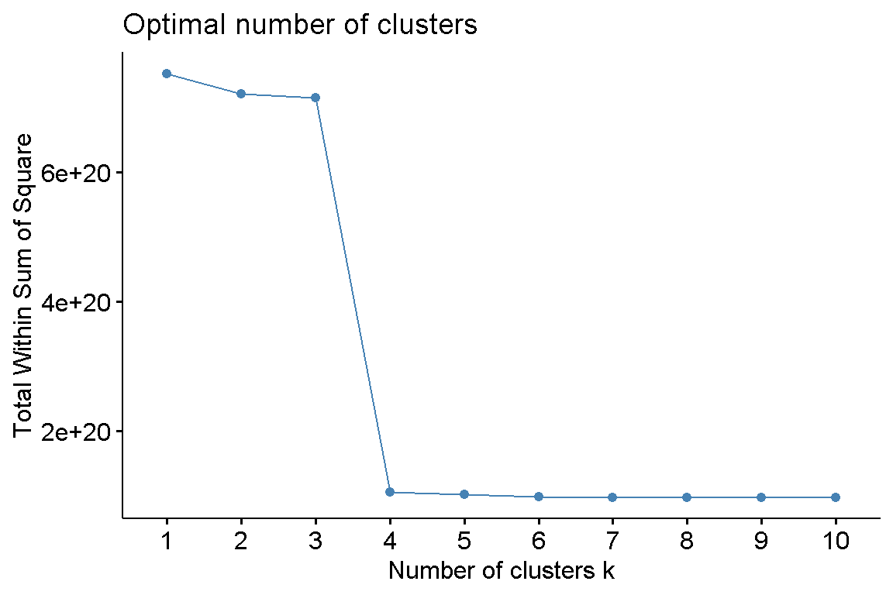
My laptop ran out of memory when I ran fviz_nbclust with the full data, hence the next best option would be to try it with a random slice of the data. I tried 20 percent, and it still took over 15 minutes to run. The results show that 4 clusters is probably optimal.
fviz_nbclust(slice_sample(data_kmeans, prop = 0.2), kmeans, method = "silhouette")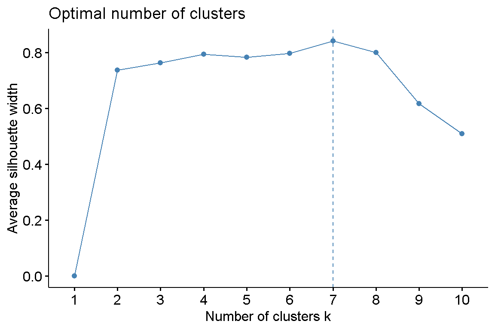
Using the Silhouette method, it was determined that 7 clusters were optimal.
data_kmeans <-
data_train_juice %>%
dplyr::select(-id, -network_attack, -proto, -service, -attack_type, -id_orig_p, -id_resp_p)
data_kmeans%>%
glimpse()
kmeans_fit <-
data_kmeans %>%
scale() %>%
as.matrix() %>%
kmeans(centers = 5, nstart = 25, iter.max = 1000L)
fviz_cluster(kmeans_fit, data = data_kmeans)
data_kmeans %>%
mutate(cluster = kmeans_fit$cluster) %>%
ggplot(aes(x = log10(fwd_pkts_payload_min),
y = log10(fwd_last_window_size),
color = as.factor(cluster))
) +
geom_jitter(alpha = 0.3)
kmeans_fit %>% summary()save.image("network.RData")